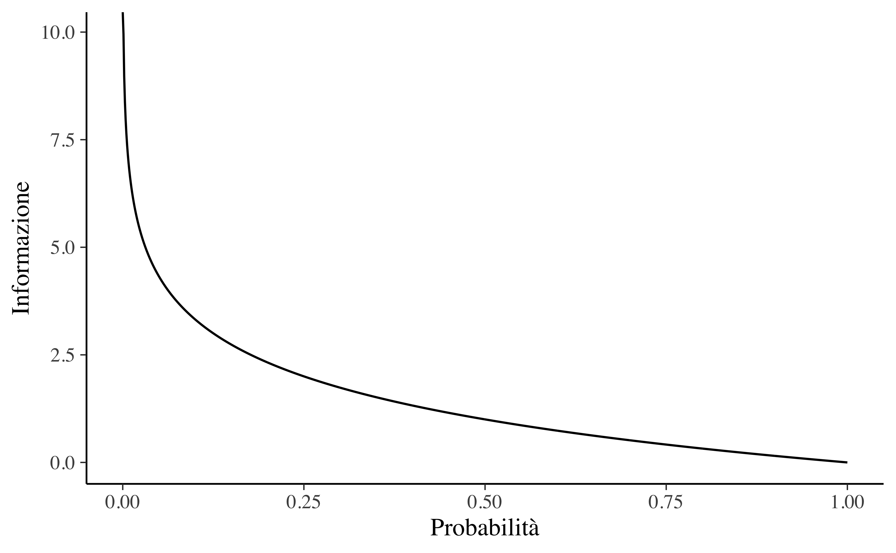
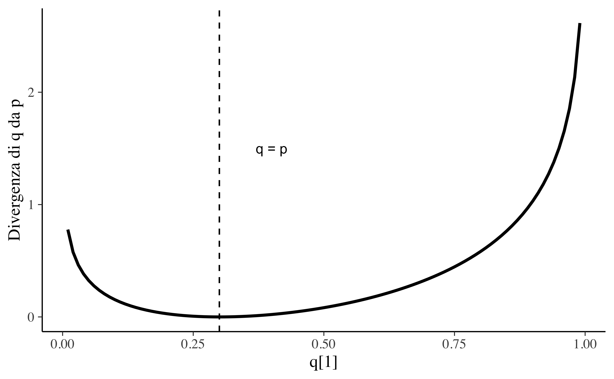
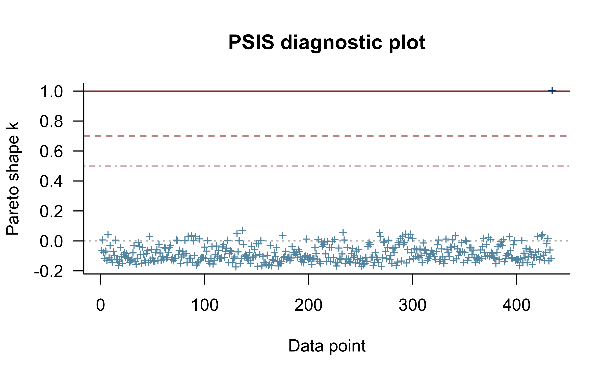
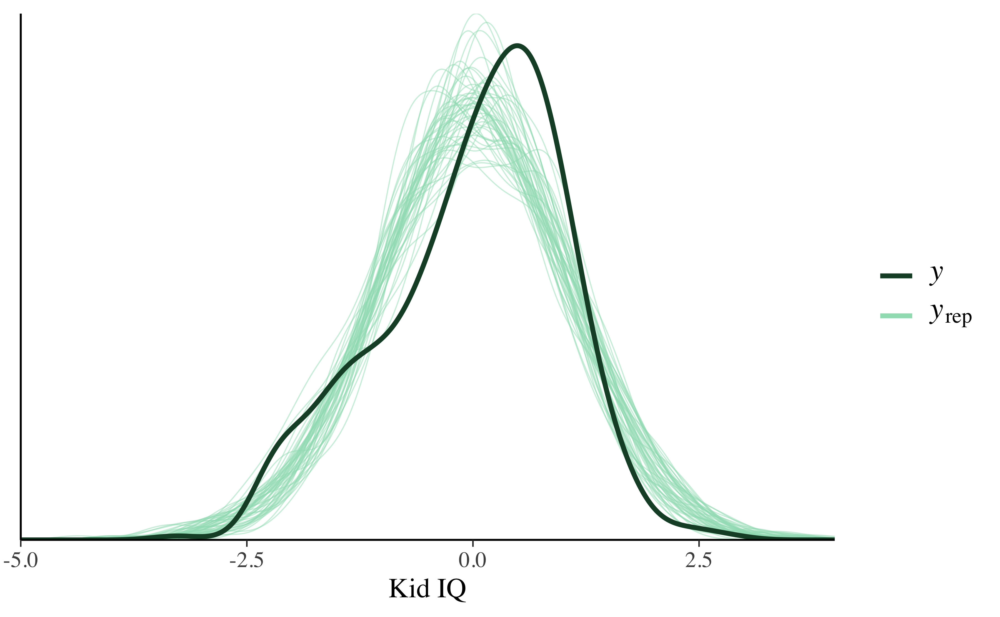
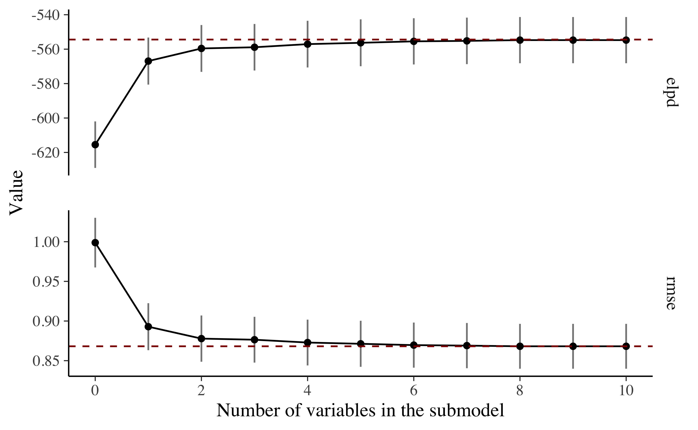
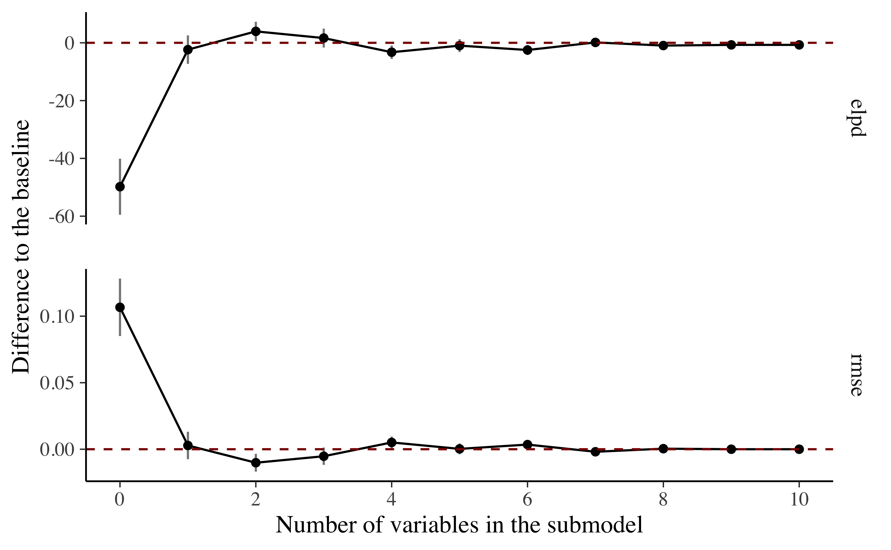

Capitolo 2 Valutare e confrontare i modelli
Il principio base del metodo scientifico è la replicabilità delle osservazioni: le osservazioni che non possono essere replicate sono poco interessanti. Parallelamente, una caratteristica fondamentale di un modello scientifico è la generalizzabilità: se un modello è capace di descrivere soltanto le proprietà di uno specifico campione di osservazioni, allora è poco utile. Ma come è possibile valutare la generalizzabilità di un modello statistico? Questa è la domanda a cui cercheremo di rispondere in questo Capitolo.
Nel valutare un modello, il ricercatore deve porsi tre domande critiche.
Quali conseguenze più ampie derivano dall’inferenza? Come e chi ha raccolto i dati? Colui che svolge la ricerca otterrebbe di benefici manipolando i dati (escludendo delle osservazioni; selezionando il campione)? Che impatto hanno inferenze che vengono tratte dai dati sugli individui e sulla società? Quali pregiudizi o strutture di potere possono essere coinvolti in questa analisi?
Che tipo di distorsioni sistematiche potrebbero essere presenti nell’analisi statistica? Ricordiamo la famosa citazione di George Box: “Tutti i modelli sono sbagliati, ma alcuni sono utili”. È dunque importante sapere quanto è sbagliato il modello. Le assunzioni che stanno alla base del modello sono ragionevoli? Il meccanismo generatore dei dati che è stato ipotizzato è adeguato per il fenomeno in esame?
Quanto è accurato il modello? Quanto sono lontane dalla realtà le previsioni del modello?
Per approfondire questi temi, si rinvia al testo di Johnson, Ott, e Dogucu (2022). Qui ci concentreremo sul tema della generalizzabilità del modello.
2.1 Capacità predittiva
Nel framework bayesiano il problema della generalizzabilità di un modello viene affrontato calcolandone la sua capacità predittiva, laddove per capacità predittiva si intende la capacità di un modello, i cui parametri sono stati stimati usando le informazioni di un campione, di ben adattarsi ad un campione di nuove osservazioni future. In questo Capitolo cercheremo di rispondere a tre domande.
- Quali criteri devono essere presi in considerazione se vogliamo valutare la capacità predittiva di un modello?
- Come è possibile quantificare la capacità predittiva di un modello sulla base delle informazioni di un campione di osservazioni?
- Come possiamo confrontare le capacità predittive di modelli alternativi?
2.2 Il rasoio di Ockham
Iniziamo prendendo in considerazione quello che è uno dei problemi più importanti in campo scientifico: il problema di scegliere il modello più adatto a spiegare un insieme di informazioni che riguardano un fenomeno di interesse. Le domande che i ricercatori si pongono sono: il modello è completo? È necessario aggiungere un nuovo parametro al modello? Come può essere migliorato il modello? Se ci sono modelli diversi, qual’è il modello migliore?
Un principio che può essere usato per rispondere a queste domande è il rasoio di Ockham: frustra fit per plura quod potest fieri per pauciora (“si fa inutilmente con molte cose ciò che si può fare con poche cose”). Parafrasando la massima potremmo dire: quando due modelli approssimano egualmente bene i dati viene sempre preferito il modello più semplice. Questo principio sta alla base della ricerca scientifica.
Il rasoio di Ockham, però, non fornisce sempre la soluzione al problema della selezione tra modelli alternativi. Due modelli possono fare le stesse predizioni pur differendo in termini di complessità — per esempio, relativamente al numero di parametri di cui sono costituiti In questo caso, è facile decidere: viene preferito il modello più semplice anche perché, pragmaticamente, è il più facile da usare. Tuttavia, in generale, i modelli differiscono sia per complessità (ovvero, per il numero di parametri) che per accuratezza (ovvero, per la grandezza degli errori di predizione). In questa situazione, il rasoio di Ockham non è sufficiente: non consente infatti di trovare un equilibrio tra la necessità di ottenere la masssima accuratezza e quella di diminuire la complessità.
In questo Capitolo ci chiederemo come sia possibile misurare l’accuratezza predittiva di un modello. Ciò ci consentirà, in seguito, di usare il rasoio di Ockham: a parità di accuratezza, verrà scelto il modello più semplice. Ma nella pratica scientifica non si sacrifica mai l’accuratezza per la semplicità: il criterio prioritario è sempre quello dell’accuratezza.
Ma come è possibile valutare l’accuratezza (predittiva) di un modello? Per rispondere a questa domanda McElreath (2020) ci fa notare che è necessario evitare due opposti errori:
il sovra-adattamento (overfitting) — il modello non si generalizza bene a nuovi dati futuri perché fa leva informazioni irrilevanti presenti nel campione esaminato; tali aspetti idiosincratici del campione necessariamente non si ritroveranno in altri campioni di dati;
il sotto-adattamento (underfitting) — il modello non è neppure in grado di rendere conto delle regolarità presenti nei dati esaminati.
In questo capitolo verranno presentati due metodi [detti criterio di informazione (information criteria) e validazione incrociata (cross-validation)] che, evitando il sovra- e il sotto-adattamento, consentono di valutare la capacità predittiva di un modello e di determinare quale, tra due o più modelli, sia quello da preferire.
2.2.1 Stargazing
Nella pratica concreta della ricerca, il metodo più comune per la selezione tra modelli statistici utilizza i test di ipotesi statistiche di stampo frequentista. Questo metodo viene chiamato stargazing, poiché richiede soltanto l’esame degli asterischi (\(**\)) che si trovano nell’output di un software statistico (gli asterischi marcano i coefficienti del modello che sono “statisticamente significativi”): alcuni ricercatori ritengono che il modello con più stelline sia il modello migliore. Ma però questo non è vero. Al di là dei problemi legati ai test dell’ipotesi nulla, è sicuramente un errore usare i test di significatività per la selezione di modelli: i valori-p non consentono di trovare un equilibrio tra underfitting e overfitting. Infatti, le variabili che migliorano la capacità predittiva di un modello non risultano sempre statisticamente significative; inoltre, le variabili che sono statisticamente significative non migliorano sempre la capacità predittiva di un modello.
L’obiettivo del confronto tra modelli è la selezione del modello che più da vicino rappresenta il “vero” processo di generazione dei dati. Un modello che rappresenta meglio il “vero” processo di generazione dei dati è da preferire ad un modello che rappresenta meno bene un tale processo. Pertanto, è necessario quantificare il grado di “vicinanza” di un modello al “vero” processo di generazione dei dati. Si noti che, in questo contesto, facciamo riferimento sia alla famiglia distributiva così come ai valori dei parametri. Ad esempio, il modello \(y_i \sim \mathcal{N}(5, 3)\) è diverso dal modello \(y_i \sim \mathcal{N}(5, 6)\), ed è anche diverso dal modello \(y_i \sim \Gamma(2, 2)\). I primi due modelli appartengono alla stessa famiglia distributiva ma differiscono nei termini dei valori dei parametri; gli ultimi due modelli appartengono a famiglie distributive diverse (Normale vs. Gamma). Per misurare il grado di “vicinanza” tra due modelli, \(\mathcal{M}_1\) e \(\mathcal{M}_2\), la metrica di gran lunga più popolare in statistica è la divergenza di Kullback-Liebler. Prima di definire tale nozione è però necessario chiarire il concetto di entropia. Nei Paragrafi successivi vedremo di sviluppare una comprensione intuitiva della nozione di entropia. Avendo fatto questo, saremo poi in grado di discutere la divergenza di Kullback-Liebler.
2.3 Entropia
Per discutere la divergenza di Kullback-Leibler è prima necessario introdurre il concetto di entropia.2 La definizione di entropia richiede il calcolo della quantità di informazione di un evento. L’intuizione dietro la quantificazione delle informazioni è l’idea di misurare quanta sorpresa fornisce un evento: gli eventi rari (a bassa probabilità) sono più sorprendenti e quindi forniscono più informazione degli eventi non rari (ad alta probabilità).
- Evento a bassa probabilità: molta informazione (sorprendente).
- Evento ad alta probabilità: poca informazione (non sorprende).
Apprendere che si è verificato un evento improbabile è più informativo che apprendere che si è verificato un evento probabile. Gli eventi rari sono più incerti, o più sorprendenti, e per essere rappresentati richiedono una quantità di maggiore di informazione rispetto agli eventi non rari.
È possibile calcolare la quantità di informazione fornita da un evento usando la probabilità dell’evento. Questa è chiamata “informazione Shannon”, “autoinformazione” o semplicemente “informazione” e, per un evento discreto \(x\), può essere calcolata come segue: \[ \text{informazione}(x) = -log\big( p(x) \big), \] dove \(log()\) è il logaritmo in base 2 e \(p(x)\) è la probabilità dell’evento \(x\).
La scelta del logaritmo in base 2 significa che l’unità di misura dell’informazione è in bit (cifre binarie). Questo può essere interpretato dicendo che l’informazione misura il numero di bit richiesti per rappresentare l’evento. Solitamente, la quantità di informazione viene denotata con \(h()\): \[ h(x) = -log\big( p(x) \big). \] Il segno negativo garantisce che il risultato sia sempre positivo o zero. L’informazione è zero quando la probabilità dell’evento è 1.0, ovvero l’evento è certo (assenza di sorpresa).
Esempio 2.1 Consideriamo il lancio di una moneta equilibrata. La probabilità di testa (e croce) è 0.5. La quantità di informazione di ottenere “testa” è dunque
-log2(0.5)
#> [1] 1Per rappresentare questo evento abbiamo bisogno di 1 bit di informazione. Se la stessa moneta venisse lanciata \(n\) volte, la quantità di informazione necessaria per rappresentare questo evento (ovvero, questa sequenza di lanci) sarebbe pari a \(n\) bit. Se la moneta non è equilibrata e la probabilità di testa è 0.1, allora l’evento “testa” è più raro e richiede più di 3 bit di informazione:
-log2(0.1)
#> [1] 3.32Consideriamo ora il lancio di un dado. Ci possiamo chiedere quanta informazione sia fornita, ad esempio, dall’evento “esce il valore 6”. Dato che la probabilità di ottenere un 6 è più piccola della probabilità di ottenere “testa” nel lancio di una moneta, ci possiamo aspettare, nel lancio del dado, una maggiore sorpresa, ovvero una maggiore quantità di informazione. La quantità di informazione dell’evento “esce un 6” nel lancio di un dado
-log2(1/6)
#> [1] 2.58è infatti più del doppio della quantità di informazione dell’evento “esce testa” nel lancio di una moneta.
Esempio 2.2 Nella figura successiva viene esaminata la relazione tra probabilità e informazione, per valori di probabilità nell’intervallo tra 0 e 1.
p <- seq(0, 1, length.out = 1000)
h <- -log2(p)
ggplot(tibble(p, h), aes(p, h)) +
geom_line() +
labs(
x = "Probabilità",
y = "Informazione"
) La figura mostra che questa relazione non è lineare, è infatti leggermente sublineare. Questo ha senso dato che abbiamo usato una funzione logaritmica.
2.3.1 Entropia di una variabile casuale
È possibile quantificare la quantità di informazione fornita da una variabile casuale.
Definizione 2.1 Sia \(Y = y_1, \dots, y_n\) una variabile casuale e \(p_t(y)\) una distribuzione di probabilità su \(Y\). Si definisce la sua entropia (detta di Shannon) come:
\[\begin{equation} H(Y) = - \sum_{i=1}^n p_t(y_i) \cdot \log p_t(y_i). \tag{2.1} \end{equation}\]
2.3.2 Proprietà
Si possono evidenziare due proprietà dell’entropia.
- L’entropia aumenta all’aumentare della varianza di una variabile casuale.
- L’entropia aumenta all’aumentare del numero delle possibilità con cui un evento può verificarsi.
Esempio 2.3 Consideriamo un esempio riguardante le previsioni del tempo. Supponiamo che le probabilità di pioggia e sole siano, rispettivamente, \(p_1 = 0.3\) e \(p_2 = 0.7\). Quindi
\[ H(p) = − [p(y_1) \log p(y_1) + p(y_2) \log p(y_2)] \approx 0.61. \] Svolgendo i calcoli in \(\R\) abbiamo:
p <- c(0.3 , 0.7)
-sum(p*log(p))
#> [1] 0.611Se però viviamo a Las Vegas, allora le probabilità di pioggia e sole saranno qualcosa come \(p(y_1) = 0.01\) e \(p(y_2) = 0.99\). In questo secondo caso, l’entropia è 0.06, ovvero, molto minore di prima. Infatti, a Las Vegas non piove quasi mai, per cui quando abbiamo imparato che, in un certo giorno, non ha piovuto, abbiamo imparato molto poco rispetto a quello che già sapevamo in precedenza.
Esempio 2.4 Abbiamo visto in precedenza che, se gli esiti possibili sono pioggia o sole con \(p(y_1) = 0.7\), \(p(y_2) = 0.3\), allora l’entropia è
-(0.7 * log(0.7) + 0.3 * log(0.3))
#> [1] 0.611Se gli esiti possibili sono pioggia, neve o sole con \(p(y_1) = 0.7\), \(p(y_2) = 0.15\) e \(p(y_3) = 0.15\), rispettivamente, allora l’entropia sarà maggiore, ovvero pari a 0.82.
-(0.7 * log(0.7) + 0.15 * log(0.15) + 0.15 * log(0.15))
#> [1] 0.8192.4 Dall’entropia all’accuratezza
Il valore assoluto dell’entropia è difficile da interpretare. Vedremo però come sia possibile usare l’entropia per misurare l’accuratezza di un modello statistico. Nello specifico, ci porremo il problema di misurare la distanza tra la distribuzione di probabilità ipotizzata da un modello, chiamiamola \(p_{\mathcal{M}}\), e la distribuzione di probabilità del vero modello generatore dei dati, \(p_t\). La teoria delle probabilità quantifica l’informazione che viene perduta quando \(p_{\mathcal{M}}\) approssima \(p_t\) mediante la divergenza di Kullback-Liebler. La divergenza di Kullback-Liebler, denotata con \(D_{KL}(p_t \mid\mid p_{\mathcal{M}})\), misura dunque l’incremento della nostra incertezza quando una distribuzione “approssimata” viene usata al posto della “vera” distribuzione di probabilità.
Definizione 2.2 Per due distribuzioni discrete \(p_t\) e \(p_{\mathcal{M}}\), la divergenza KL di \(p_{\mathcal{M}}\) da \(p_t\) è definita come: \[\begin{equation} D_{KL}(p_t \mid\mid p_{\mathcal{M}}) = \sum_{i=1}^n p_t(y_i) \cdot \left[\log p_t(y_i) - \log p_{\mathcal{M}}(y_i)\right]. \tag{2.2} \end{equation}\]
La divergenza di Kullback-Liebler introduce un piccolo cambiamento alla (2.1): anziché considerare una sola distribuzione di probabilità, \(p_t\), considera anche una approssimazione a tale distribuzione, ovvero \(p_{\mathcal{M}}\). Calcolando la differenza dei logaritmi dei valori delle due distribuzioni si giunge alla (2.2).
La divergenza KL misura dunque la quantità di informazione che viene perduta quando una distribuzione approssimata viene usata per descrivere le proprietà della distribuzione di riferimento. Se c’è una perfetta corrispondenza tra le due distribuzioni, \(p_t = p_{\mathcal{M}}\), allora \[ D_{KL}(p_t \mid\mid p_{\mathcal{M}}) = D_{KL}(p_t \mid\mid p_t) = \sum_{i=1}^n p_t(y_i) \cdot \left[\log p_t(y_i) - \log p_t(y_i)\right] = 0, \] ovvvero: nessuna incertezza aggiuntiva viene introdotta se una distribuzione viene usata per rappresentare se stessa. Altrimenti, cioè se \(p_t \neq p_{\mathcal{M}}\), la divergenza KL assume valori nell’intervallo \([0, \infty]\): all’aumentare della differenza tra \(p_{\mathcal{M}}\) e \(p_t\) aumenta il valore \(D_{KL}(p_t \mid\mid p_{\mathcal{M}})\).
Esempio 2.5 (da McElreath 2020) Sia la distribuzione target \(p = \{0.3, 0.7\}\). Supponiamo che la distribuzione approssimata \(q\) possa assumere valori da \(q = \{0.01, 0.99\}\) a \(q = \{0.99, 0.01\}\). Calcoliamo la divergenza KL.
Le istruzioni \(\R\) sono le seguenti:
t <-
tibble(
p_1 = .3,
p_2 = .7,
q_1 = seq(from = .01, to = .99, by = .01)
) %>%
mutate(
q_2 = 1 - q_1
) %>%
mutate(
d_kl = (p_1 * log(p_1 / q_1)) + (p_2 * log(p_2 / q_2))
)
head(t)
#> # A tibble: 6 × 5
#> p_1 p_2 q_1 q_2 d_kl
#> <dbl> <dbl> <dbl> <dbl> <dbl>
#> 1 0.3 0.7 0.01 0.99 0.778
#> 2 0.3 0.7 0.02 0.98 0.577
#> 3 0.3 0.7 0.03 0.97 0.462
#> 4 0.3 0.7 0.04 0.96 0.383
#> 5 0.3 0.7 0.05 0.95 0.324
#> 6 0.3 0.7 0.06 0.94 0.276Nella figura seguente sull’asse delle ascisse sono rappresentati i valori \(q\) e sull’asse delle ordinante sono riportati i corrispondenti valori \(D_{KL}\).
t %>%
ggplot(aes(x = q_1, y = d_kl)) +
geom_vline(xintercept = .3, linetype = 2) +
geom_line(size = 1) +
annotate(geom = "text", x = .4, y = 1.5, label = "q = p",
size = 3.5) +
labs(x = "q[1]",
y = "Divergenza di q da p") Tanto meglio la distribuzione \(q\) approssima la distribuzione target tanto più piccolo è il valore di divergenza KL.
Esempio 2.6 Sia \(p\) una distribuzione binomiale di parametri \(\theta = 0.2\) e \(n = 5\)
n <- 4
p <- 0.2
true_py <- dbinom(0:n, n, 0.2)
true_py
#> [1] 0.4096 0.4096 0.1536 0.0256 0.0016Sia \(q_1\) una approssimazione a \(p\):
q1 <- c(0.46, 0.42, 0.10, 0.01, 0.01)
q1
#> [1] 0.46 0.42 0.10 0.01 0.01Sia \(q_2\) una distribuzione uniforme:
q2 <- rep(0.2, 5)
q2
#> [1] 0.2 0.2 0.2 0.2 0.2La divergenza KL di \(q_1\) da \(p\) è
sum(true_py * log(true_py / q1))
#> [1] 0.0293La divergenza KL di \(q_2\) da \(p\) è:
sum(true_py * log(true_py / q2))
#> [1] 0.486È chiaro che perdiamo una quantità maggiore di informazioni se, per descrivere la distribuzione binomiale \(p\), usiamo la distribuzione uniforme \(q_2\) anziché \(q_1\).
2.4.1 La divergenza dipende dalla direzione
La divergenza KL non è simmetrica: la KL da \(p_t\) a \(p_{\mathcal{M}}\) in generale è diversa dalla KL da \(p_{\mathcal{M}}\) a \(p_t\).
Esempio 2.7 Usando le seguenti istruzioni \(\R\) otteniamo:
tibble(direction = c("Da q a p", "Da p a q"),
p_1 = c(.01, .7),
q_1 = c(.7, .01)) %>%
mutate(p_2 = 1 - p_1,
q_2 = 1 - q_1) %>%
mutate(d_kl = (p_1 * log(p_1 / q_1)) + (p_2 * log(p_2 / q_2)))
#> # A tibble: 2 × 6
#> direction p_1 q_1 p_2 q_2 d_kl
#> <chr> <dbl> <dbl> <dbl> <dbl> <dbl>
#> 1 Da q a p 0.01 0.7 0.99 0.3 1.14
#> 2 Da p a q 0.7 0.01 0.3 0.99 2.622.5 Expected log predictive density
Nel caso continuo, la divergenza KL diventa: \[\begin{equation} D_{KL}(p_t \mid\mid p_{\mathcal{M}}) = \int_{-\infty}^{+\infty}p_{t}(y)\log p_{t}(y) dy - \int_{-\infty}^{+\infty}p_{t}(y)\log p_{\mathcal{M}}(y) dy. \tag{2.3} \end{equation}\] Se vengono confrontati due modelli, il primo termine della (2.3) resta costante e il confronto si riduce al secondo termine della (2.3), ovvero \[\begin{equation} \int_{-\infty}^{+\infty}p_{t}(y)\log p_{\mathcal{M}}(y) dy. \tag{2.4} \end{equation}\] Riscriviamo ora la (2.4) facendo riferimento alla distribuzione predittiva a posteriori, \(p(\tilde{y} \mid y)\), perché ciò a cui siamo interessati è la divergenza di \(p(\tilde{y} \mid y)\) da \(p_{t}(y)\): \[\begin{equation} \elpd = \int_{\tilde{y}} p_{t}(\tilde{y}) \log p(\tilde{y} \mid y) d\tilde{y}. \tag{2.5} \end{equation}\] La (2.5) è chiamata expected log predictive density (\(\elpd\)) e fornisce la risposta al problema che ci eravamo posti all’inizio di questo Capitolo, ovvero al problema di definire un criterio per valutare la capacità predittiva di un modello. Possiamo pensare alla (2.5) dicendo che descrive la distribuzione predittiva a posteriori del modello ponderando la verosimiglianza dei possibili dati futuri con la vera distribuzione \(p_t\). Di conseguenza, valori \(\elpd\) più grandi corrispondono ad una maggiore capacità predittiva del modello.
Non dobbiamo preoccuparci di trovare una formulazione analitica della distribuzione predittiva a posteriori \(p(\tilde{y} \mid y)\) perché, come abbiamo visto nel Capitolo ??, è possibile approssimare tale distribuzione mediante simulazione. Notiamo però che la (2.5) è formulata nei termini del vero modello generatore dei dati, \(p_t\), il quale, ovviamente, è ignoto.3 Di conseguenza, la quantità \(\elpd\) non può mai essere calcolata in maniera esatta, ma può essere solo stimata. Il secondo problema di questo Capitolo è capire come la (2.5) possa essere stimata utilizzando un campione di osservazioni.
2.5.1 Log pointwise predictive density
Ingenuamente, potremmo pensare di stimare la (2.5) ipotizzando che la distribuzione del campione coincida con \(p_t\). Usare la distribuzione del campione come proxy del vero modello generatore dei dati (ovvero, ipotizzare che la distribuzione del campione rappresenti fedelmente \(p_t\)) comporta due conseguenze:
- dato che il campione è finito, anziché eseguire un’operazione di integrazione, possiamo semplicemente sommare la densità predittiva a posteriori delle osservazioni;
- non è necessario ponderare per \(p_t\), in quanto assumiamo che la distribuzione empirica del campione corrisponde a \(p_t\) (ciò significa assumere che i valori più comunemente osservati nel campione siano anche quelli più verosimili nella vera distribuzione \(p_t\)).
Questo conduce alla seguente equazione:4 \[\begin{equation} \frac{1}{n} \sum_{i=1}^n \log p(y_i^{rep} \mid y). \tag{2.6} \end{equation}\] La quantità (2.6), senza il passaggio finale della divisione per il numero di osservazioni, è chiamata log pointwise predictive density (\(\lppd\)) \[\begin{equation} \lppd = \sum_{i=1}^n \log p(y_i^{rep} \mid y) \tag{2.7} \end{equation}\] e corrisponde alla somma delle densità predittive logaritmiche delle \(n\) osservazioni. Valori più grandi della (2.7) sono da preferire perché indicano una maggiore accuratezza media. È anche comune vedere espressa la quantità precedente nei termini della devianza, ovvero alla \(\lppd\) moltiplicata per -2. In questo secondo caso sono da preferire valori piccoli.
È importante notare che \(\lppd\) fornisce una sovrastima della (2.5). Tale sovrastima è dovuta al fatto che, nel calcolo della (2.7), abbiamo usato \(p(y^{rep} \mid y)\) al posto di \(p(\tilde{y} \mid y)\): in altri termini, abbiamo considerato le osservazioni del campione come se fossero un nuovo campione di dati. In una serie di simulazioni, McElreath (2020) esamina il significato di questa sovrastima. Nelle simulazioni la devianza viene calcolata come funzione della complessità (ovvero, il numero di parametri) del modello. La simulazione mostra che \(\lppd\) aumenta al crescere del numero di parametri del modello. Ciò significa che \(\lppd\) mostra lo stesso limite del coefficiente di determinazione: aumenta all’aumentare della complessità del modello.
Esempio 2.8 Esaminiamo un esempio tratto da Bayesian Data Analysis for Cognitive Science nel quale la \(\elpd\) viene calcolata in forma esatta oppure mediante approssimazione. Supponiamo di disporre di un campione di \(n\) osservazioni. Supponiamo inoltre di conoscere il vero processo generativo dei dati (qualcosa che in pratica non è mai possibile), ovvero:
\[ p_t(y) = \Beta(1, 3). \] I dati sono
set.seed(75)
n <- 10000
y_data <- rbeta(n, 1, 3)
head(y_data)
#> [1] 0.5506 0.1335 0.8025 0.2143 0.0191 0.0868Supponiamo inoltre di avere adattato ai dati un modello bayesiano \(\mathcal{M}\) e di avere ottenuto la distribuzione a posteriori per i parametri del modello. Inoltre, supponiamo di avere derivato la forma analitica della distribuzione predittiva a posteriori per il modello: \[ p(y^{rep} \mid y) \sim \Beta(2, 2). \] Questa distribuzione ci dice quanto sono credibili i possibili dati futuri.
Conoscendo la vera distribuzione dei dati \(p_t(y)\) possiamo calcolare in forma esatta la quantità \(\elpd\), ovvero \[ \elpd = \int_{y^{rep}}p_{t}(y^{rep})\log p(y^{rep} \mid y) dy^{rep}. \] Svolgiamo i calcoli in \(\R\) otteniamo:
# True distribution
p_t <- function(y) dbeta(y, 1, 3)
# Predictive distribution
p <- function(y) dbeta(y, 2, 2)
# Integration
integrand <- function(y) p_t(y) * log(p(y))
integrate(f = integrand, lower = 0, upper = 1)
#> -0.375 with absolute error < 6.8e-07Tuttavia, in pratica non conosciamo mai \(p_t(y)\). Quindi approssimiamo \(\elpd\) usando la (2.5): \[ \frac{1}{n} \sum_{i=1}^n \log p(y_i \mid y). \] Così facendo, e svolgendo i calcoli in \(\R\), otteniamo
1/n * sum(log(p(y_data)))
#> [1] -0.364un valore diverso da quello trovato in precedenza.
2.6 Criterio di informazione e convalida incrociata K-fold
Nel Paragrafo precedente abbiamo visto che la (2.7) fornisce una sovrastima della \(\elpd\). Il modo migliore per stimare \(\elpd\) è raccogliere un nuovo campione indipendente di dati, che si ritiene condivida lo stesso processo di generazione dei dati del campione corrente, e stimare \(\elpd\) sul nuovo campione. Questa procedura è chiamata out-of-sample validation. Il problema, ovviamente, è che di solito non abbiamo le risorse per raccogliere un nuovo campione. Di conseguenza, gli statistici hanno messo a punto vari metodi per evitare la sovrastima della \(\elpd\) che deriva dal solo utizzo del campione corrente. Ci sono due approcci generali:
- l’introduzione di un fattore di correzione;
- la convalida incrociata cosiddetta K-fold.
2.6.1 AIC, DIC e WAIC
Allo scopo di evitare la sovrastima della (2.7), le statistiche Akaike Information Criterion (AIC), Deviance Information Criterion (DIC) e Widely Applicable Information Criterion (WAIC) introducono un fattore di correzione. Le statistiche DIC e WAIC sono più complesse di AIC, ma producono un’approssimazione migliore. Tuttavia, i valori AIC, DIC e WAIC sono spesso molto simili tra loro. Per convenienza, dunque, qui ci accontenteremo di esaminare da vicino la statistica più semplice, ovvero AIC.
2.6.1.1 Criterio d’informazione di Akaike
Il criterio d’informazione di Akaike (in inglese Akaike information criterion, indicato come AIC) fornisce un metodo molto semplice per stimare la devianza media out-of-sample.
Definizione 2.3 Il criterio d’informazione di Akaike è definito come
\[\begin{equation} AIC = -2 \log p(y \mid \hat{\theta}_{MLE}) + 2k, \end{equation}\] dove \(k\) è il numero di parametri stimati nel modello e \(p(y \mid \hat{\theta}_{MLE})\) è il valore massimizzato della funzione di verosimiglianza del modello stimato.
Dividendo per -2, otteniamo \(\elpd_{AIC}\):
\[\begin{equation} \widehat{\elpd}_{AIC} = \log p(y \mid \hat{\theta}_{MLE}) - k, \end{equation}\]
dove \(k\) è il fattore di correzione introdotto per evitare la sovrastima discussa in precedenza.
AIC è di interesse principalmente storico e produce una approssimazione attendibile di \(\elpd\) quando:
- le distribuzioni a priori sono non informative;
- la distribuzione a posteriori è approssimativamente gaussiana multivariata;
- la dimensione \(n\) del campione è molto maggiore del numero \(k\) dei parametri.
Esempio 2.9 Per meglio comprendere la statistica \(\widehat{\elpd}_{AIC}\), esaminiamo un esempio discusso da Gelman, Hwang, e Vehtari (2014). Sia \(y_1, \dots, y_n \sim \mathcal{N}(\theta, 1)\) un campione di osservazioni. Nel caso di una distribuzione a priori non-informativa \(p(\theta) \propto 1\), la stima di massima verosimiglianza è \(\bar{y}\). La log-verosimiglianza è \[\begin{align} \log p(y \mid \hat{\theta}_{MLE}) &= -\frac{n}{2} \log (2\pi) - \frac{1}{2}\sum_{i=1}^n (y_i - \bar{y})^2 \notag\\ &= -\frac{n}{2} \log (2\pi) - \frac{1}{2} (n-1)s_y^2, \end{align}\] dove \(s_y^2\) è la varianza campionaria.
Nel caso di un modello Normale con con varianza nota e una distribuzione a priori uniforme viene stimato un solo parametro, per cui \[\begin{align} \widehat{\elpd}_{AIC} &= \log p(y \mid \hat{\theta}_{MLE}) - k \notag \\ &= -\frac{n}{2} \log (2\pi) - \frac{1}{2} (n-1)s_y^2 - 1. \end{align}\]
2.6.2 Convalida incrociata K-fold
La sovrastima della (2.7) può anche essere evitata usando una tecnica chiamata K-fold cross-validation. Mediante questo metodo vengono stimati i parametri del modello tralasciando una porzione di osservazioni (chiamata fold) dal campione per poi valutare il modello sulle osservazioni che sono state escluse. Una stima complessiva dell’accuratezza si ottiene poi calcolando la media del punteggio di accuratezza ottenuto in ogni fold. Il numero minimo di fold è 2; all’altro estremo, è possibile impiegare una singola osservazione in ciascun fold e adattare il modello tante volte (\(n\)) quante sono le singole osservazioni. Questa strategia è chiamata leave-one-out cross-validation (LOO-CV).
2.6.2.1 Importance sampling
La strategia LOO-CV è computazionalmente onerosa (ovvero, richiede un tempo di esecuzione molto lungo). È però possibile approssimare LOO-CV mediante un metodo chiamato Pareto-smoothed importance sampling cross-validation [PSIS; Vehtari, Gelman, e Gabry (2017)]. Tralasciando qui i dettagli matematici, l’intuizione di base è che PSIS fa leva sul punteggio di “importanza” posseduto da ciascuna osservazione all’interno della distribuzione a posteriori. Per “importanza” si intende il fatto che alcune osservazioni hanno un impatto maggiore sulle proprietà della distribuzione a posteriori di altre: se viene rimossa un’osservazione importante, le proprietà della distribuzione a posteriori cambiano molto; se viene rimossa un’osservazione poco importante, la distribuzione a posteriori cambia poco. L’“importanza” così intesa viene chiamata “peso” (weight) e tali pesi vengono utilizzati per stimare l’accuratezza out-of-sample del modello. PSIS-LOO-CV richiede che il modello venga adattato una volta soltanto ai dati e fornisce una stima della devianza out-of-sample che evita la sovrastima della (2.7). Inoltre, PSIS-LOO-CV fornisce un feedback sulla propria affidabilità identificando le osservazioni i cui pesi molto elevati potrebbero rendere imprecisa la predizione.
Valori \(\widehat{\elpd}_{\LOO}\) più grandi indicano una maggiore accuratezza predittiva. In alternativa, anziché considerare \(\widehat{\elpd}\), è possibile usare la quantità \(-2 \cdot \widehat{\elpd}\), la quale è chiamata LOO Information Criterion (LOOIC). In questo secondo caso, valori LOOIC più piccoli sono da preferire.
La quantità \(\widehat{\elpd}_{\LOO}\) viene calcolata dai pacchetti loo e brms ed è chiamata elpd_loo o elpd_kfold. È anche possibile calcolare la differenza della quantità elpd_loo per modelli alternativi, insieme alla deviazione standard della distribuzione campionaria di tale differenza.
2.6.2.2 Confronto tra AIC e LOO-CV
Per fare un esempio, faremo qui un confronto tra \(\widehat{\elpd}_{AIC}\) e \(\widehat{\elpd}_{LOO-CV}\). Esaminiamo nuovamente l’associazione tra il QI dei figli e il QI delle madri nel campione di dati discusso da Gelman, Hill, e Vehtari (2020). Una tale relazione può essere descritta da un modello di regressione nel quale la \(y\) corrisponde al QI dei figli e la \(x\) al QI delle madri.
Leggiamo i dati in :
library("foreign")
df <- read.dta(here("data", "kidiq.dta"))
df$y <- scale(df$kid_score)[, 1]
df$x1 <- scale(df$mom_iq)[, 1]
head(df)
#> kid_score mom_hs mom_iq mom_work mom_age y x1
#> 1 65 1 121.1 4 27 -1.0679 1.4078
#> 2 98 1 89.4 4 25 0.5489 -0.7092
#> 3 85 1 115.4 4 27 -0.0881 1.0295
#> 4 83 1 99.4 3 25 -0.1860 -0.0367
#> 5 115 1 92.7 4 27 1.3818 -0.4836
#> 6 98 0 107.9 1 18 0.5489 0.5268Dato che AIC non è una statistica bayesiana, può essere calcolata mediante strumenti frequentisti:
m1_freq <- lm(y ~ x1, data = df)
AIC(m1_freq) / -2
#> [1] -570Per ottenere LOO-CV adattiamo ai dati un modello di regressione bayesiano:
modelString = "
data {
int<lower=0> N;
vector[N] x1;
vector[N] y;
}
parameters {
real alpha;
real beta1;
real<lower=0> sigma;
}
transformed parameters {
vector[N] mu;
for (n in 1:N){
mu[n] = alpha + beta1*x1[n];
}
}
model {
alpha ~ normal(0, 1);
beta1 ~ normal(0, 1);
sigma ~ cauchy(0, 1);
y ~ normal(mu, sigma);
}
generated quantities {
vector[N] y_rep;
vector[N] log_lik;
for (n in 1:N){
y_rep[n] = normal_rng(mu[n], sigma);
log_lik[n] = normal_lpdf(y[n] | x1[n] * beta1, sigma);
}
}
"
writeLines(modelString, con = "code/simplereg.stan")data1_list <- list(
N = length(df$kid_score),
y = df$y,
x1 = df$x1
)file1 <- file.path("code", "simplereg.stan")mod1 <- cmdstan_model(file1)Eseguiamo il campionamento MCMC:
fit1 <- mod1$sample(
data = data1_list,
iter_sampling = 4000L,
iter_warmup = 2000L,
seed = SEED,
chains = 4L,
parallel_chains = 2L,
refresh = 0,
thin = 1
)Calcoliamo infine la quantità \(\widehat{\elpd}_{LOO-CV}\):
loo1_result <- fit1$loo(cores = 4)
print(loo1_result)
#>
#> Computed from 16000 by 434 log-likelihood matrix
#>
#> Estimate SE
#> elpd_loo -568.6 14.5
#> p_loo 1.9 0.2
#> looic 1137.2 28.9
#> ------
#> Monte Carlo SE of elpd_loo is 0.0.
#>
#> All Pareto k estimates are good (k < 0.5).
#> See help('pareto-k-diagnostic') for details.Si noti la somiglianza tra \(\widehat{\elpd}_{LOO-CV}\) e \(\widehat{\elpd}_{AIC}\). In conclusione, possiamo dunque dire che \(\widehat{\elpd}_{LOO-CV}\) è la risposta bayesiana allo stesso problema che trova una soluzione frequentista nella statistica \(\widehat{\elpd}_{AIC}\).
2.6.3 Confronto tra modelli mediante LOO-CV
Come menzionato in precedenza, l’obiettivo centrale della misurazione dell’accuratezza predittiva è il confronto di modelli. Una volta capito come calcolare LOO-CV con un condice scritto in linguaggio Stan, svolgeremo ora un confronto di modelli.5
Considereremo qui un confronto di modelli di regressione. Il modello di regressione discusso nel Paragrafo precedente prevede il QI dei bambini dal QI delle madri. Aggiungiamo a tale modello un secondo predittore che corrisponde all’età della madre. L’aggiunta di tale predittore migliori l’accuratezza predittiva del modello?
modelString = "
data {
int<lower=0> N;
vector[N] x1;
vector[N] x2;
vector[N] y;
}
parameters {
real alpha;
real beta1;
real beta2;
real<lower=0> sigma;
}
transformed parameters {
vector[N] mu;
for (n in 1:N){
mu[n] = alpha + beta1*x1[n] + beta2*x2[n];
}
}
model {
alpha ~ normal(0, 1);
beta1 ~ normal(0, 1);
beta2 ~ normal(0, 1);
sigma ~ cauchy(0, 1);
y ~ normal(mu, sigma);
}
generated quantities {
vector[N] y_rep;
vector[N] log_lik;
for (n in 1:N){
y_rep[n] = normal_rng(mu[n], sigma);
log_lik[n] = normal_lpdf(y[n] | x1[n] * beta1 + x2[n] * beta2, sigma);
}
}
"
writeLines(modelString, con = "code/mreg2.stan")df$x2 <- scale(df$mom_age)[, 1]data2_list <- list(
N = length(df$kid_score),
y = df$y,
x1 = df$x1,
x2 = df$x2
)file2 <- file.path("code", "mreg2.stan")# compile model
mod2 <- cmdstan_model(file2)# Running MCMC
fit2 <- mod2$sample(
data = data2_list,
iter_sampling = 4000L,
iter_warmup = 2000L,
seed = SEED,
chains = 4L,
parallel_chains = 2L,
refresh = 0,
thin = 1
)fit2$summary(c("alpha", "beta1", "beta2", "sigma"))
#> # A tibble: 4 × 10
#> variable mean median sd mad q5 q95 rhat ess_bulk ess_tail
#> <chr> <dbl> <dbl> <dbl> <dbl> <dbl> <dbl> <dbl> <dbl> <dbl>
#> 1 alpha 0.000387 5.70e-4 0.0431 0.0427 -0.0706 0.0709 1.00 18092. 12482.
#> 2 beta1 0.442 4.42e-1 0.0434 0.0428 0.372 0.514 1.00 18884. 12262.
#> 3 beta2 0.0510 5.11e-2 0.0431 0.0431 -0.0192 0.122 1.00 19099. 12929.
#> 4 sigma 0.896 8.96e-1 0.0306 0.0303 0.847 0.947 1.00 18776. 13031.loo2_result <- fit2$loo(cores = 4)
print(loo2_result)
#>
#> Computed from 16000 by 434 log-likelihood matrix
#>
#> Estimate SE
#> elpd_loo -569.0 14.5
#> p_loo 3.0 0.3
#> looic 1137.9 29.0
#> ------
#> Monte Carlo SE of elpd_loo is 0.0.
#>
#> All Pareto k estimates are good (k < 0.5).
#> See help('pareto-k-diagnostic') for details.Consideriamo infine un terzo modello che utilizza come predittori, oltre al QI della madre, una variabile dicotomica (codificata 0 o 1) che distingue madri che hanno completato le scuole superiori da quelle che non le hanno completate. Nuovamente, la domanda è se l’aggiunta di tale predittore migliori la capacità predittiva del modello.
modelString = "
data {
int<lower=0> N;
vector[N] x1;
vector[N] x3;
vector[N] y;
}
parameters {
real alpha;
real beta1;
real beta3;
real<lower=0> sigma;
}
transformed parameters {
vector[N] mu;
for (n in 1:N){
mu[n] = alpha + beta1*x1[n] + beta3*x3[n];
}
}
model {
alpha ~ normal(0, 1);
beta1 ~ normal(0, 1);
beta3 ~ normal(0, 1);
sigma ~ cauchy(0, 1);
y ~ normal(mu, sigma);
}
generated quantities {
vector[N] y_rep;
vector[N] log_lik;
for (n in 1:N){
y_rep[n] = normal_rng(mu[n], sigma);
log_lik[n] = normal_lpdf(y[n] | x1[n] * beta1 + x3[n] * beta3, sigma);
}
}
"
writeLines(modelString, con = "code/mreg3.stan")df$x3 <- df$mom_hsdata3_list <- list(
N = length(df$kid_score),
y = df$y,
x1 = df$x1,
x3 = df$x3
)file3 <- file.path("code", "mreg3.stan")mod3 <- cmdstan_model(file3)fit3 <- mod3$sample(
data = data3_list,
iter_sampling = 4000L,
iter_warmup = 2000L,
seed = SEED,
chains = 4L,
parallel_chains = 2L,
refresh = 0,
thin = 1
)fit3$summary(c("alpha", "beta1", "beta3", "sigma"))
#> # A tibble: 4 × 10
#> variable mean median sd mad q5 q95 rhat ess_bulk ess_tail
#> <chr> <dbl> <dbl> <dbl> <dbl> <dbl> <dbl> <dbl> <dbl> <dbl>
#> 1 alpha -0.225 -0.225 0.0951 0.0939 -0.380 -0.0673 1.00 7808. 8235.
#> 2 beta1 0.414 0.414 0.0445 0.0440 0.340 0.487 1.00 10200. 9870.
#> 3 beta3 0.287 0.288 0.108 0.106 0.108 0.463 1.00 7832. 8542.
#> 4 sigma 0.890 0.889 0.0300 0.0295 0.842 0.941 1.00 11733. 10064.loo3_result <- fit3$loo(cores = 4)
print(loo3_result)
#>
#> Computed from 16000 by 434 log-likelihood matrix
#>
#> Estimate SE
#> elpd_loo -584.2 16.4
#> p_loo 7.4 0.6
#> looic 1168.4 32.8
#> ------
#> Monte Carlo SE of elpd_loo is 0.0.
#>
#> All Pareto k estimates are good (k < 0.5).
#> See help('pareto-k-diagnostic') for details.Per eseguire un confronto tra modelli in termini della loro capacità predittiva esaminiamo la differenza di LOO-CV tra coppie di modelli. Le seguenti istruzioni \(\R\) producono la quantità elpd_diff, ovvero la differenza tra stime della \(\elpd\) fornite da due modelli. Il primo argomento della funzione loo_compare() specifica il modello che viene usato come confronto. Nella prima riga dell’output, il valore elpd_diff è 0 (cioè, \(x − x = 0\)). Nelle righe successive sono riportate le differenze rispetto al modello di confronto (in questo caso, il modello 1). La colonna se_diff riporta l’errore standard di tali differenze.
L’incertezza della stima dell’accuratezza out-of-sample si distribuisce in maniera approssimativamente normale con media uguale al valore riportato dal software e deviazione standard uguale a ciò che è indicato nell’output come errore standard. Quando il campione è piccolo, questa approssimazione produce una forte sottostima dell’incertezza, ma fornisce comunque una stima migliore di AIC, DIC e WAIC.
w <- loo_compare(loo1_result, loo2_result, loo3_result)
print(w)
#> elpd_diff se_diff
#> model1 0.0 0.0
#> model2 -0.4 1.3
#> model3 -15.6 6.0Per interpretare l’output, usiamo il criterio suggerito da Gelman et al. (1995): consideriamo “credibile” una differenza se elpd_diff è almeno due volte maggiore di se_diff. Nel caso presente, dunque, il confronto tra il modello 2 e il modello 1 indica che la quantità elpd_diff è molto piccola rispetto al suo errore standard.
Questo accade se un predittore è associato in modo trascurabile con la variabile dipendente. I dati presenti, dunque, non offrono alcuna evidenza che aggiungere dell’età della madre come predittore migliori la capacità predittiva del modello. Nel confronto tra modello 3 e modello 1, invece, la quantità elpd_diff è maggiore di due volte il valore dell’errore standard. Questo suggerisce un incremento della capacità predittiva del modello quiando il livello di istruzione della madre viene incluso tra i predittori.
È anche possibile calcolare l’intervallo di credibilità per elpd_diff:
15.5 + c(-1, 1) * qnorm(.95, 0, 1) * 6.0
#> [1] 5.63 25.372.6.4 Outlier
Si è soliti pensare che la maggior parte delle osservazioni del campione sia prodotta da un unico meccanismo generatore dei dati, mentre le rimanenti osservazioni sono la realizzazione di un diverso processo stocastico. Le osservazioni che appartengono a questo secondo gruppo si chiamano outlier. È dunque necessario identificare gli outlier e limitare la loro influenza sull’inferenza.6
Poniamoci ora il problema di identificare gli outlier con la tecnica PSIS-LOO-CV. Quando PSIS-LOO-CV viene calcolato con il pacchetto loo, l’output riporta il parametro di forma della distribuzione di Pareto (valore k). Tale valore può essere utilizzato per identificare gli outlier. Infatti, il valore k valuta, per ciascun punto del campione, l’approssimazione usata da PSIS-LOO-CV. Se \(k < 0.5\), i pesi di importanza vengono stimati in modo accurato; se il valore \(k\) di Pareto di un punto è \(> 0.7\), i pesi di importanza possono essere inaccurati. Le osservazioni con \(k > 0.7\) sono dunque osservazioni outlier.
Per fare un esempio concreto, introduciamo nel campione dell’esempio precedente una singola osservazione outlier.
df1 <- df
dim(df1)
#> [1] 434 9
df1$x1[434] <- 10
df1$y[434] <- 10Sistemiamo i dati nel formato appropriato per Stan:
data1a_list <- list(
N = length(df1$kid_score),
y = df1$y,
x1 = df1$x1
)Adattiamo nuovamente il modello 1 ad un campione di dati che contiene un outlier.
fit1a <- mod1$sample(
data = data1a_list,
iter_sampling = 4000L,
iter_warmup = 2000L,
seed = SEED,
chains = 4L,
parallel_chains = 2L,
refresh = 0,
thin = 1
)loo1a_result <- fit1a$loo(cores = 4)Una tabella diagnostica che riassume le stime dei parametri di forma della distribuzione di Pareto si ottiene nel modo seguente:
print(loo1a_result)
#>
#> Computed from 16000 by 434 log-likelihood matrix
#>
#> Estimate SE
#> elpd_loo -586.6 20.1
#> p_loo 7.1 5.4
#> looic 1173.2 40.3
#> ------
#> Monte Carlo SE of elpd_loo is NA.
#>
#> Pareto k diagnostic values:
#> Count Pct. Min. n_eff
#> (-Inf, 0.5] (good) 433 99.8% 9998
#> (0.5, 0.7] (ok) 0 0.0% <NA>
#> (0.7, 1] (bad) 0 0.0% <NA>
#> (1, Inf) (very bad) 1 0.2% 13
#> See help('pareto-k-diagnostic') for details.Un grafico che riporta le stime dei parametri di forma della distribuzione di Pareto per ciascuna osservazione è dato da:
plot(loo1a_result)
Il valore k stimato da PSIS-LOO-CV mette chiaramente in luce il fatto che il valore introdotto nel campione è un outlier. L’indice dell’osservazione outlier è identificato con:
pareto_k_ids(loo1a_result, threshold = 0.7)
#> [1] 4342.7 Selezione di variabili
I concetti che sono stati introdotti in questo Capitolo, tra le altre cose, risultano utili per affrontare un problema importante in psicologia, ovvero quello della semplificazione di un modello di regressione che contiene molti predittori. Il problema è quello di selezionare un insieme di variabili indipendenti così che tale selezione non comporti una apprezzabile perdita nella capacità predittiva del modello ristretto rispetto al modello completo. Un modo per identificare le variabili rilevanti per prevedere una determinata variabile risposta è quello di utilizzare il metodo basato sulla proiezione, come discusso nel seguente link e in (piironen2017comparison?). Per descrivere questa procedura, adatto qui un esempio discusso da Mark Lai in Course Handouts for Bayesian Data Analysis Class. Iniziamo a leggere i dati.
kidiq <- rio::import(here::here("data", "kidiq.dta"))
kidiq <- kidiq %>%
mutate(
mom_hs = factor(mom_hs, labels = c("no", "yes"))
)Per potere usare delle distribuzione a priori sensate per i parametri, standardizzo le variabili numeriche.
scale_this <- function(x) as.vector(scale(x))
kidiq_scaled <- kidiq %>%
as_tibble() %>%
mutate(across(where(is.numeric), scale_this))
kidiq_scaled <- kidiq_scaled %>%
mutate(
mom_hs = kidiq$mom_hs
)
glimpse(kidiq_scaled)
#> Rows: 434
#> Columns: 5
#> $ kid_score <dbl> -1.06793, 0.54887, -0.08805, -0.18604, 1.38176, 0.54887, -0.…
#> $ mom_hs <fct> yes, yes, yes, yes, yes, no, yes, yes, yes, yes, yes, yes, y…
#> $ mom_iq <dbl> 1.40784, -0.70921, 1.02954, -0.03669, -0.48362, 0.52679, 2.5…
#> $ mom_work <dbl> 0.9342, 0.9342, 0.9342, 0.0878, 0.9342, -1.6051, 0.9342, 0.0…
#> $ mom_age <dbl> 1.5602, 0.8198, 1.5602, 0.8198, 1.5602, -1.7718, -1.0313, 0.…Il seguente modello di regressione utilizza kid_score quale variabile dipendente e, quali predittori, include tutte le altre variabili disponibili e le loro interazioni a due vie.
m1 <- brm(
kid_score ~ (mom_iq + mom_hs + mom_work + mom_age)^2,
data = kidiq_scaled,
prior = c(
prior(normal(0, 1), class = "Intercept"),
prior(normal(0, 1), class = "b"),
prior(student_t(4, 0, 1), class = "sigma")
),
seed = 2302,
chains = 4L,
cores = 4L,
refresh = 0,
backend = "cmdstan"
)
#> Running MCMC with 4 parallel chains...
#>
#> Chain 1 finished in 0.2 seconds.
#> Chain 2 finished in 0.2 seconds.
#> Chain 3 finished in 0.2 seconds.
#> Chain 4 finished in 0.2 seconds.
#>
#> All 4 chains finished successfully.
#> Mean chain execution time: 0.2 seconds.
#> Total execution time: 0.3 seconds.Un grafico che riporta un posterior predictive check si ottiene con l’istruzione seguente:
pp_check(m1, ndraws = 50, alpha = 0.5) +
xlim(-5, 4) +
labs(x = "Kid IQ") Identifichiamo ora l’importanza relativa delle variabili indipendenti nei termini della loro importanza per la previsione:
# Variable selection
vs <- projpred::varsel(m1)
Un grafico dell’importanza relativa di ciascuna variable per la previsione di kid_score si ottiene nel modo seguente:
# plot predictive performance on training data
plot(vs, stats = c("elpd", "rmse")) Troviamo ora il numero di variabili da mantenere, in base al modello completo:
projpred::suggest_size(vs)
#> [1] 5
Usiamo quindi il metodo cv_varsel() per eseguire la convalida incrociata per vedere quante variabili dovrebbero essere incluse nel modello:
# With cross-validation
cvs <- projpred::cv_varsel(m1, verbose = FALSE)In base al metodo della convalida incrociata, il numero di variabili da mantenere è
projpred::suggest_size(cvs)
#> [1] 1Generiamo il grafico dei risultati della convalida incrociata, questa volta relativi al modello completo:
plot(cvs, stats = c("elpd", "rmse"), deltas = TRUE) Stampiamo l’elenco delle variabili ordinate in base alla loro importanza relativa, secondo il metodo della convalida incrociata:
summary(cvs, stats=c('mse'), type = c('mean','se'))
#> size solution_terms mse mse.se
#> 2 0 <NA> 1.001 0.0651
#> 3 1 mom_iq 0.804 0.0536
#> 4 2 mom_iq:mom_hs 0.781 0.0519
#> 5 3 mom_hs 0.790 0.0530
#> 6 4 mom_hs:mom_age 0.808 0.0539
#> 7 5 mom_hs:mom_work 0.800 0.0541
#> 8 6 mom_work:mom_age 0.805 0.0539
#> 9 7 mom_iq:mom_work 0.796 0.0529
#> 10 8 mom_iq:mom_age 0.800 0.0530
#> 11 9 mom_work 0.799 0.0528
#> 12 10 mom_age 0.799 0.0528Il metodo basato sulla proiezione produce le distribuzioni a posteriori basate su una proiezione dal modello completo sul modello semplificato. In altre parole, si pone la domanda: “Se vogliamo un modello con solo mom_iq nel modello, quali coefficienti dovrebbero essere usati per fare in modo che l’accuratezza della previsione risultante sia la più vicina possibile a quella del modello completo?”. I coefficienti ottenuti con il metodo basato sulla proiezione saranno dunque diversi da quelli che si avrebbero se si stimasse direttamente il modello utilizzando il solo predittore mom_iq (ad es. m2). I risultati ottenuti da studi basati sulla simulazione hanno mostrato che il metodo basato sulla proiezione produce un modello con prestazioni predittive migliori.
proj1 <- projpred::project(
cvs,
nv = suggest_size(cvs),
seed = 123,
ns = 1000
)
posterior_summary(proj1) %>%
round(3)
#> Estimate Est.Error Q2.5 Q97.5
#> Intercept 0.002 0.037 -0.064 0.075
#> mom_iq 0.445 0.037 0.374 0.516
#> sigma 0.916 0.015 0.891 0.948Per fare un confronto, stimiamo i coefficienti del modello di regressione che include unicamente la variabile mom_iq:
m2 <- brm(kid_score ~ mom_iq,
data = kidiq_scaled,
prior = c(
prior(normal(0, 1), class = "Intercept"),
prior(normal(0, 1), class = "b"),
prior(student_t(4, 0, 1), class = "sigma")
),
seed = 2302,
chains = 4L,
cores = 4L,
refresh = 0,
backend = "cmdstan"
)
#> Running MCMC with 4 parallel chains...
#>
#> Chain 1 finished in 0.0 seconds.
#> Chain 2 finished in 0.0 seconds.
#> Chain 3 finished in 0.0 seconds.
#> Chain 4 finished in 0.0 seconds.
#>
#> All 4 chains finished successfully.
#> Mean chain execution time: 0.0 seconds.
#> Total execution time: 0.2 seconds.summary(m2)
#> Family: gaussian
#> Links: mu = identity; sigma = identity
#> Formula: kid_score ~ mom_iq
#> Data: kidiq_scaled (Number of observations: 434)
#> Draws: 4 chains, each with iter = 1000; warmup = 0; thin = 1;
#> total post-warmup draws = 4000
#>
#> Population-Level Effects:
#> Estimate Est.Error l-95% CI u-95% CI Rhat Bulk_ESS Tail_ESS
#> Intercept -0.00 0.04 -0.08 0.08 1.00 4154 3062
#> mom_iq 0.45 0.04 0.36 0.53 1.00 4078 2888
#>
#> Family Specific Parameters:
#> Estimate Est.Error l-95% CI u-95% CI Rhat Bulk_ESS Tail_ESS
#> sigma 0.90 0.03 0.84 0.96 1.00 4067 3113
#>
#> Draws were sampled using sample(hmc). For each parameter, Bulk_ESS
#> and Tail_ESS are effective sample size measures, and Rhat is the potential
#> scale reduction factor on split chains (at convergence, Rhat = 1).Eseguiamo ora un confronto tra il modello completo e il modello semplificato in base alla statistica LOO-CV:
loo1 <- loo::loo(m1)
loo2 <- loo::loo(m2)
loo::loo_compare(loo1, loo2)
#> elpd_diff se_diff
#> m1 0.0 0.0
#> m2 -2.2 5.0I risultati indicano che il Modello m1 ha il valore LOO-IC più basso (e quindi sarebbe quello da preferire). Tuttavia, se si confronta la differenza LOO-IC tra il Modello m1 e il Modello m2 e si tiene in considerazione l’errore standard corrispondente (nella colonna se_diff), la differenza tra m1 e m2 risulta essere relativamente piccola. Dato che il Modello m2 è più semplice di m2, e dato che la diminuzione di capacità predittiva è trascurabile (elpd_diff / se_diff \(< 2\)), possiamo concludere che il Modello m2 è il modello migliore tra i due modelli considerati.
Di seguito vengono calcolati i coefficienti di determinazione bayesiani dei due modelli:
loo_R2(m1, robust = TRUE) %>%
round(3)
#> Estimate Est.Error Q2.5 Q97.5
#> R2 0.201 0.036 0.125 0.27
loo_R2(m2, robust = TRUE)%>%
round(3)
#> Estimate Est.Error Q2.5 Q97.5
#> R2 0.196 0.033 0.128 0.255Nel caso presente, le differenze sono minime, ma questo non è sempre vero.
Considerazioni conclusive
Dati due modelli computazionali che forniscono resoconti diversi di un set di dati, come possiamo decidere quale modello è maggiormente supportato dai dati? Nel presente Capitolo abbiamo visto come il problema del confronto di modelli possa essere formulato nei termini di un problema di inferenza statistica. È però necessaria una nota di cautela. Navarro (2019) ci fa notare che il problema statistico del confronto di modelli non risolve il problema scientifico della selezione di teorie. A questo proposito usa una citazione di George Box:
Since all models are wrong the scientist must be alert to what is importantly wrong. It is inappropriate to be concerned about mice when there are tigers abroad.
La metafora delle tigri di George Box fa riferimento evidentemente all’assunzione che sta alla base delle procedure discusse in questo Capitolo, ovvero all’ipotesi che il vero meccanismo generatore dei dati sia noto e che l’unica incognita corrisponda ai parametri. Tuttavia le cose non sono così semplici: nei casi di interesse scientifico è lo stesso meccanismo generatore dei dati ad essere sconosciuto. I ricercatori non comprendono appieno i fenomeni che stanno studiando (altrimenti perché studiarli?) e qualunque descrizione formale di un fenomeno (modello) è sbagliata in un modo sconosciuto e sistematico. Di conseguenza, è “facile” fare inferenza sulla capacità predittiva del modello, ma è molto difficile fare inferenza sulla struttura causale dei fenomeni. In altre parole, se le analisi statistiche ci dicono che un modello ha una buona accuratezza predittiva, con ciò non abbiamo imparato nulla sulla struttura causale del fenomeno. Ma è anche vera l’affermazione opposta: un modello che non ha neppure una buona accuratezza predittiva esso è sicuramente inutile: non è in grado né di fare previsioni accurate né di catturare la struttura causale.
References
La nozione di entropia fu introdotta agli inizi del XIX secolo nel campo della termodinamica classica; il secondo principio della termodinamica è infatti basato sul concetto di entropia che, in generale, è assunto come una misura del disordine di un sistema fisico. Successivamente Boltzmann fornì una definizione statistica di entropia. Nel 1948 Shannon impiegò la nozione di entropia nell’ambito della teoria delle comunicazioni.↩︎
Se il modello sottostante i dati fosse noto non avremmo bisogno di cercare il modello migliore, perché \(p_t\) è il modello migliore.↩︎
In riferimento alla notazione, ricordiamo che Gelman, Hwang, e Vehtari (2014) distinguono tra \(y^{rep}\) e \(\tilde{y}\). I valori \(y^{rep}\) corrispondono ad un’altra possibile realizzazione del medesimo modello statistico che ha prodotto \(y\) mediante determinati valori dei parametri \(\theta\) (repliche sotto lo stesso modello statistico). I valori \(\tilde{y}\) corrispondono invece ad un campione empirico di dati osservato in qualche futura occasione.↩︎
A questo proposito, è necessario aggiungere una nota di cautela. Come fa notare McElreath (2020), fare previsioni e inferire i rapporti causali sono due cose molto diverse. Statistiche quali AIC, WAIC e LOO-CV consentono di individuare modelli con buone capacità predittive. Tali modelli, tuttavia, non riflettono necessariamente la struttura causale del fenomeno considerato: la selezione di modelli basata unicamente sull’accuratezza predittiva non garantisce che venga selezionato il modello che riflette la struttura causale del fenomeno (si veda anche Navarro 2019).↩︎
McElreath (2020) nota che, spesso, i ricercatori eliminano i valori anomali prima di adattare un modello ai dati, basandosi solo sulla distanza dal valore medio della variabile dipendente misurata in termini di unità di deviazione standard. Secondo McElreath (2020) questo non dovrebbe mai essere fatto: un’osservazione può essere considerata come un valore anomalo o un valore influente solo alla luce delle predizioni di un modello (mai prima di avere adattato il modello ai dati). Se ci sono solo pochi valori anomali una strategia possibile è quella di riportare i risultati delle analisi statistiche svolte su tutto il campione dei dati oppure dopo avere eliminato le osservazioni anomale e influenti.↩︎